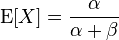

Lecture 8: Property-based Testing
Presenter Notes
Chapter 8 revolves around Generators and Properties.
A Generator provides pseudo-random test cases. A Generator is entirely deterministic - tests are reproducible. It is based upon Rand from Chapter 6.
A Property is something that should hold true for an unknown number of test cases.
The tools of Chapter 8 are available in the ScalaCheck library. ScalaCheck and Chapter 8 both provide property-based testing.
We have simplified the book's implementation.
Presenter Notes
Gen
case class Gen[A](rand: RNG => (A, RNG))
// [Int.MinValue, Int.MaxValue]
val genUniformInt: Gen[Int] = ...
// [0, Int.MaxValue]
val genUniformIntNonNegative: Gen[Int] =
genUniformInt.map( i => i.abs )
// true or false
val genBoolean: Gen[Boolean] =
genUniformInt.map(i => i >= 0)
Presenter Notes
def forAll[A](genA: Gen[A])(p: A => Boolean): Prop
= ...
Proposition will hold true for every value A generated by Gen[A].
Otherwise, proposition will be falsified.
The number of tests to prove or falsify the proposition, and Gen[A]'s seed RNG, are not yet provided.
Presenter Notes
Prop
// number of tests, seed => Result
case class Prop(run: (Int, RNG) => Result)
case class Gen[A](rand: RNG => (A, RNG))
Presenter Notes
In our implementation, when a Property is tested for a fixed number of test cases,
it produces an Xor[NonEmptyList[String], List[String]].
This Xor will be
Left(...): Xor[NonEmptyList[String], Nothing]
// test failed
or
Right(...): Xor[Nothing, List[String]]
// test passed
Presenter Notes
Presenter Notes
Testing our Beta Distribution Sampler
In lab 6 we sampled from a Beta distribution.
Before, we set alpha = 2 and beta = 2. Our PDF was the purple line.

Presenter Notes
We will generate Beta distributions with various $\alpha and \$beta,
then compare the theoretical mean with the sample mean for each.

If the difference between the theoretical mean and the sample mean exceeds a fixed threshold, the test will fail.
Presenter Notes
Beta sampler
case class BetaDistributionSampling(
c: Double, alpha: Double, beta: Double) {
// Beta PDF
def f(x: Double): Double =
math.pow(x, alpha - 1) *
math.pow((1 - x), beta - 1)
val sample: Rand[(Double, Double)] =
both(uniformDoublePositive,
uniformDoublePositiveUpTo(c))
...
slideCode.lecture6.BetaDistributionSampling
Presenter Notes
Beta sampler
...
def accepted(tup: Tuple2[Double, Double]):
Boolean = {
val x = tup._1
val y = tup._2
if (y < f(x)) true
else false
}
val acceptedSamples:
Rand[Tuple2[Double, Double]] =
rejectionSampler(sample)(accepted)
val acceptedX: Rand[Double] =
map(acceptedSamples)(tup => tup._1)
}
slideCode.lecture6.BetaDistributionSampling
Presenter Notes
Generating Beta distributions
val genBetaDistribution:
Gen[BetaDistributionSampling] =
genUniformDoublePositiveUpTo(5.0).flatMap {
alpha =>
genUniformDoublePositiveUpTo(5.0).map {
beta =>
// println(s"alpha: $alpha beta: $beta")
BetaDistributionSampling(5.0, alpha, beta)
}
}
slidecode.lecture8.TestingBetaDistributions
Presenter Notes
Pulling values out of the Generator
case class BetaDistributionSampling(
c: Double, alpha: Double, beta: Double) { ... }
Pulling 16 values out of genBetaDistribution: Gen[BetaDistributionSampling]
BetaDistributionSampling(5.0,1.59,3.91)
BetaDistributionSampling(5.0,0.61,3.79)
BetaDistributionSampling(5.0,4.47,4.12)
BetaDistributionSampling(5.0,3.26,4.62)
BetaDistributionSampling(5.0,0.29,1.77)
BetaDistributionSampling(5.0,1.57,3.94)
...
Presenter Notes
From each Beta distribution, we want 512 samples. We need to pass along the alpha and beta, as well.
val genBetaDistributionSamples:
// alpha beta samples
Gen[Tuple3[Double, Double, List[Double]]] =
genBetaDistribution.flatMap {
betaDistributionSampler => ...
}
Presenter Notes
From each alpha, beta, and list of samples, we want a theoretical mean and a sample mean.
val genBetaDistributionMean:
// theoretical mean, sample mean
Gen[Tuple2[Double, Double]] =
genBetaDistributionSamples.map { ... }
Presenter Notes
Producing the Property
We will use forAll to produce a Prop.
Signature of the forAll method:
def forAll[A](genA: Gen[A])(p: A => Boolean): Prop
Signature of the forAll method in this usage:
def forAll[Tuple2[Double,Double]]
(genA: Gen[Tuple2[Double,Double]]])
(p: Tuple2[Double,Double] => Boolean): Prop
We need to implement the predicate.
Presenter Notes
Predicate for testing Beta distributions
val diffLimit = 0.5
def betaDistributionPredicate(
tup: Tuple2[Double, Double]): Boolean = {
val theoreticalMean = tup._1
val actualMean = tup._2
val diff = (theoreticalMean - actualMean).abs
diff < diffLimit
}
Presenter Notes
We have a Property
val betaDistributionProp: Prop =
forAll(genBetaDistributionMean)
(betaDistributionPredicate)
Presenter Notes
Running the Property
val simpleSeed = RNG(123.toLong)
val tp: TestParameters =
TestParameters(32, 16, simpleSeed)
val betaDistributionResult: Result =
betaDistributionProp.run(tp)
println(s"Beta distribution theoretical
mean and actual mean should be
less than $diffLimit apart")
println(betaDistributionResult)
Presenter Notes
Successful for 16 test cases
a = (0.518,0.512) rng1 = RNG(281224260715694)
a = (0.738,0.739) rng1 = RNG(16414381877132)
a = (0.610,0.581) rng1 = RNG(227948167035286)
a = (0.640,0.621) rng1 = RNG(243689560722)
a = (0.520,0.523) rng1 = RNG(278578944958020)
a = (0.988,0.710) rng1 = RNG(73703246433449)
a = (0.760,0.761) rng1 = RNG(278677516185330)
...
Beta distribution theoretical mean and
actual mean should be less than 0.5 apart
Passed
Presenter Notes
Tests for production with ScalaCheck
case class UnvalidatedWebForm(firstName: String,
lastName: String, phoneNumber: Long,
email: String)
case class ValidatedWebForm(firstName: String,
lastName: String, phoneNumber: Long,
email: String)
type XorErrors[E, A] = Xor[NonEmptyList[E], A]
We want to accumulate errors of type E, or pass along a validated A.
Left is a failed validation.
Right is a successful validation.
Presenter Notes
def isAlpha(string: String):
XorErrors[String, String] = ...
def minimumLength(minLength: Int)(string: String):
XorErrors[String, String] = ...
def numDigits(num: Long, length: Int):
XorErrors[String, Long] = ...
def validateEmailAddress(emailAddress: String):
XorErrors[String, String] = ...
def validateWebForm
(unvalidatedWebForm: UnvalidatedWebForm):
XorErrors[String, ValidatedWebForm] = ...
Presenter Notes
unvalidated:
UnvalidatedWebForm(P3t3r,Bec1ch,
1234567890,no@suffix)
validated:
Left(
OneAnd(String P3t3r contains non-alpha characters,
List(Not a valid e-mail address: no@suffix,
String Bec1ch contains non-alpha characters)))
Presenter Notes
Code being tested:
package slideCode.lecture8
case class UnvalidatedWebForm(...)
object ValidatedWebForm { ... }
case class ValidatedWebForm(...)
Found in:
lectureCode/slideCode/src/main/
scala/slideCode/lecture8/WebForm.scala
In SBT:
run
Presenter Notes
Tests:
package slideCode.lecture8
class WebFormSpec extends PropSpec
with GeneratorDrivenPropertyChecks
with Matchers { ... }
Found in:
lectureCode/slideCode/src/test/
scala/slideCode/lecture8/WebFormTest.scala
In SBT:
test
Presenter Notes
Generating successful web forms -- names
def genAlphaString(length: Int): Gen[String] =
Gen.listOfN(length, Gen.alphaChar).map {
(listChar: List[Char]) =>
listChar.foldRight("")(_+_)
}
val genNameSuccessful: Gen[String] =
Gen.chooseNum(2, 16).flatMap(genAlphaString)
Presenter Notes
// Testing
// def validateName(name: String):
// XorErrors[String, String] = { ... }
property("`validateName` should accept alpha-only names
of length greater than 1 character") {
forAll(genNameSuccessful) { name =>
ValidatedWebForm.validateName(name).isRight
should be (true)
}
}
Presenter Notes
Generating successful web forms -- phone numbers
val genPhoneNumberSevenDigit: Gen[Long] =
Gen.chooseNum(1000.toLong, 9999.toLong).
map((l: Long) => l*spire.math.pow(10, 3))
val genPhoneNumberTenDigit: Gen[Long] = ...
val genPhoneNumberSuccessful: Gen[Long] =
Gen.oneOf(genPhoneNumberSevenDigit,
genPhoneNumberTenDigit)
Presenter Notes
// Testing
// def validatePhoneNumber(phoneNumber: Long):
// XorErrors[String, Long] = { ... }
property("`validatePhoneNumber` should accept
phone numbers of 7 digits,
that do not begin with 0") {
forAll(genPhoneNumberSevenDigit) { phone =>
ValidatedWebForm.
validatePhoneNumber(phone).isRight
should be (true)
}
}
Presenter Notes
Generating successful web forms -- email addresses
val genSuffix: Gen[String] =
Gen.oneOf("com","net","biz","co")
val genEmailAddressSuccessful: Gen[String] =
...map { ... =>
name + "@" + domain + "." + suffix
}
Presenter Notes
Challenge question
genNameSuccessful: Gen[String]
genPhoneNumberSuccessful: Gen[Long]
genEmailAddressSuccessful: Gen[String]
// want:
genUnvalidatedWebFormSuccessful:
Gen[UnvalidatedWebForm] = ???
case class UnvalidatedWebForm(firstName: String,
lastName: String, phoneNumber: Long,
email: String)
Presenter Notes
Presenter Notes
Putting the names, phone numbers, and email addresses together
val genUnvalidatedWebFormSuccessful:
Gen[UnvalidatedWebForm] =
genNameSuccessful.flatMap { firstName =>
genNameSuccessful.flatMap { lastName =>
genPhoneNumberSuccessful.flatMap { phone =>
genEmailAddressSuccessful.map { email =>
UnvalidatedWebForm(firstName, lastName,
phone, email)
}
}
}
}
Presenter Notes
// Testing
// def validateWebForm
// (unvalidatedWebForm: UnvalidatedWebForm):
// XorErrors[String, ValidatedWebForm] = { ... }
property("`validateWebForm` should accept these
unvalidated web forms") {
check {
Prop.forAllNoShrink
(genUnvalidatedWebFormSuccessful){ form =>
ValidatedWebForm.
validateWebForm(form).
isRight
}
} }
Presenter Notes
Generating failing web forms
def genAlphaNumericString(length: Int):
Gen[String] = ...
val genNameNumericFailing: Gen[String] =
Gen.chooseNum(1, 16).
flatMap(genAlphaNumericString)
val genPhoneNumberWrongLength: Gen[Long] = ...
val genEmailAddressNoDomainFailing: Gen[String]
= ...
val genUnvalidatedWebFormSuccessful:
Gen[UnvalidatedWebForm] = ...
Presenter Notes
property("`validatePhoneNumber` should reject
phone numbers that are not 7 or 10 digits") {
forAll(genPhoneNumberWrongLength) { phone =>
ValidatedWebForm.
validatePhoneNumber(phone).
isRight
should be (false)
}
}
Equivalently
isLeft
should be (true)
Presenter Notes
Output
WebFormSpec:
- `validateName` should accept alpha-only
names of length greater than 1 character
- `validateName` should reject names with
numeric characters
- `validateName` should reject names of
length 1 character
- `validatePhoneNumber` should accept
phone numbers of 7 digits, that
...
Suites: completed 1, aborted 0
Tests: succeeded 12, failed 0, canceled 0,
ignored 0, pending 0